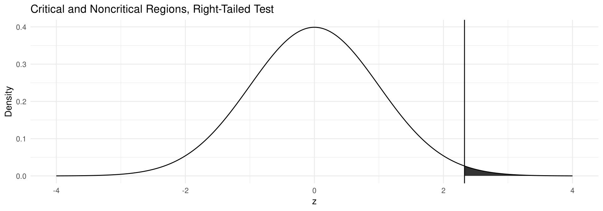
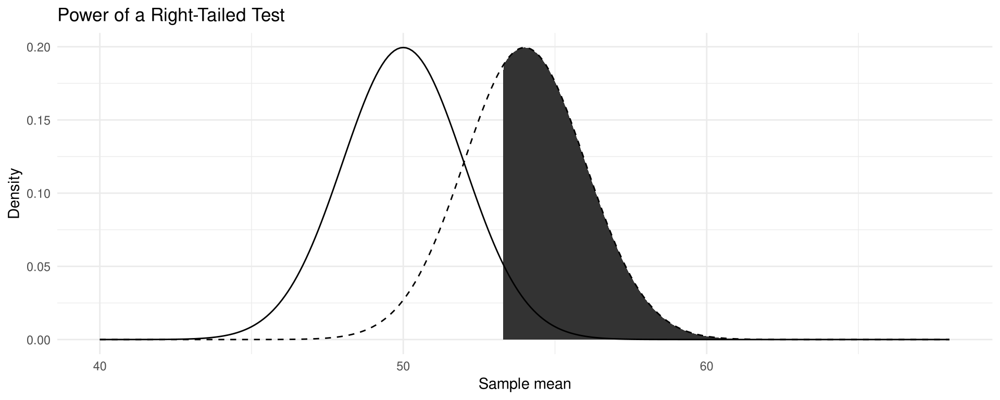

[1] 2.053749[1] -1.959964[1] 1.959964[1] -1.281552Chapter 8: Hypothesis Testing
Shih Chien University
2026-10-08
Chapter 8 is about hypothesis testing — using sample data to evaluate a claim about a population parameter.
| Section | Topics |
|---|---|
| 8-1 | Null and alternative hypotheses; test statistic; type I and II errors; \alpha; critical value and region; one- and two-tailed tests; traditional and P-value methods |
| 8-2 | z test for a mean, \sigma known; assumptions; traditional and P-value methods |
| 8-3 | t test for a mean, \sigma unknown; critical t values; P-value intervals; z versus t |
| Section | Topics |
|---|---|
| 8-4 | z test for a proportion; assumptions np \geq 5, nq \geq 5 |
| 8-5 | \chi^2 test for a variance or standard deviation; critical \chi^2 values |
| 8-6 | Confidence intervals and hypothesis testing; type II error, \beta, power |
After completing this chapter, you should be able to
Statistical hypothesis testing is a decision-making process for evaluating claims about a population. The researcher defines the population, states the hypotheses, gives the significance level, selects a sample, collects the data, performs the calculations required for the statistical test, and reaches a conclusion.
Three Methods Used to Test Hypotheses
The traditional method has been used since hypothesis testing was formulated; the P-value method became popular with modern computers and statistical calculators.
Statistical Hypothesis
A statistical hypothesis is a conjecture about a population parameter. This conjecture may or may not be true.
Null and Alternative Hypotheses
The null hypothesis, symbolized by H_0, is a statistical hypothesis that states that there is no difference between a parameter and a specific value, or that there is no difference between two parameters.
The alternative hypothesis, symbolized by H_1, is a statistical hypothesis that states the existence of a difference between a parameter and a specific value, or states that there is a difference between two parameters.
Situation A. A medical researcher asks whether a new medication changes the pulse rate; the population mean is 82 beats per minute. H_0: \mu = 82 and H_1: \mu \neq 82 — a two-tailed test.
Situation B. A chemist invents an additive to increase battery life; the mean lifetime without it is 36 months. H_0: \mu = 36 and H_1: \mu > 36 — a right-tailed test.
Situation C. A contractor wishes to lower the average monthly heating bill of $78 with special insulation. H_0: \mu = 78 and H_1: \mu < 78 — a left-tailed test.
Stating the Hypotheses Together
| Two-tailed test | Right-tailed test | Left-tailed test | |
|---|---|---|---|
| Mean | H_0: \mu = k, H_1: \mu \neq k | H_0: \mu = k, H_1: \mu > k | H_0: \mu = k, H_1: \mu < k |
| Proportion | H_0: p = k, H_1: p \neq k | H_0: p = k, H_1: p > k | H_0: p = k, H_1: p < k |
In this book the null hypothesis is always stated with an equals sign. Because a researcher generally looks for evidence to support a claim, the claim is usually stated as the alternative hypothesis — which is why H_1 is sometimes called the research hypothesis.
Translating Words into Symbols
| > | < |
|---|---|
| Is greater than | Is less than |
| Is above | Is below |
| Is higher than | Is lower than |
| Is longer than | Is shorter than |
| Is bigger than | Is smaller than |
| Is increased | Is decreased or reduced from |
| = | \neq |
|---|---|
| Is equal to | Is not equal to |
| Is no different from | Is different from |
| Has not changed from | Has changed from |
| Is the same as | Is not the same as |
Caution
A claim stated with the words “at least” or “at most” is a null hypothesis.
A claim can be stated as either the null or the alternative hypothesis, but statistical evidence can only support the claim when it is the alternative hypothesis, and can only reject the claim when it is the null hypothesis.
Stating the Null and Alternative Hypotheses
State the null and alternative hypotheses for each conjecture.
(a) A logistics manager thinks that the average picking time per order at a distribution centre is less than 42 seconds.
(b) A hotel group believes that the average length of stay of a foreign guest in Taipei is greater than 2.8 nights.
(c) An analyst thinks that the average weekday number of passengers entering Taipei Main Station has changed from 320 thousand.
(d) Forty-six percent of online shoppers in Taiwan pay by cash on delivery at a convenience store.
(e) More than 35% of the export containers leaving Kaohsiung are bound for Southeast Asia.
(f) Less than 58% of food-delivery orders are placed on a weekday.
Solution
(a) H_0: \mu = 42 and H_1: \mu < 42
(b) H_0: \mu = 2.8 and H_1: \mu > 2.8
(c) H_0: \mu = 320 and H_1: \mu \neq 320
(d) H_0: p = 0.46 and H_1: p \neq 0.46
(e) H_0: p = 0.35 and H_1: p > 0.35
(f) H_0: p = 0.58 and H_1: p < 0.58
Statistical Test
A statistical test uses the data obtained from a sample to make a decision about whether the null hypothesis should be rejected.
The numerical value obtained from a statistical test is called the test statistic.
Even when H_0 is true, the sample mean will rarely equal the population mean exactly. Either the difference is due to chance, or the sample came from a population whose mean is some other, unknown value. The farther the sample mean is from the hypothesized mean, the more evidence there is for rejecting H_0.
Figure 8-2: Possible Outcomes of a Hypothesis Test
| Decision | H_0 true | H_0 false |
|---|---|---|
| Reject H_0 | Type I error | Correct decision |
| Do not reject H_0 | Correct decision | Type II error |
Type I and Type II Errors
A type I error occurs if you reject the null hypothesis when it is true.
A type II error occurs if you do not reject the null hypothesis when it is false.
The hypotheses are H_0: the defendant is innocent; H_1: the defendant is not innocent.
Figure 8-3: The Results of a Trial
| Decision | H_0 true (innocent) | H_0 false (not innocent) |
|---|---|---|
| Reject H_0 (convict) | Type I error | Correct decision |
| Do not reject H_0 (acquit) | Correct decision | Type II error |
A type I error puts an innocent person in jail; a type II error lets a guilty person go free.
The verdict does not prove that the defendant did or did not commit the crime — it is based on the evidence presented. Likewise, rejecting or not rejecting H_0 proves nothing; the decision is made on the basis of probabilities.
Level of Significance
The level of significance is the maximum probability of committing a type I error. This probability is symbolized by \alpha. That is, P(\text{type I error}) = \alpha.
The probability of a type II error is symbolized by \beta: P(\text{type II error}) = \beta.
Three Conventional Levels
Statisticians generally agree on the 0.10, 0.05 and 0.01 levels. When \alpha = 0.10 there is a 10% chance of rejecting a true null hypothesis; when \alpha = 0.05, a 5% chance; when \alpha = 0.01, a 1% chance.
In most hypothesis-testing situations \beta cannot be easily computed; \alpha and \beta are related in that decreasing one increases the other.
Three Definitions
The critical or rejection region is the range of test statistics that indicates that there is a significant difference and that the null hypothesis should be rejected.
The noncritical or nonrejection region is the range of test statistics that indicates that the difference was probably due to chance and that the null hypothesis should not be rejected.
The critical value separates the critical region from the noncritical region. The symbol for critical value is C.V.
One-Tailed Test
A one-tailed test indicates that the null hypothesis should be rejected when the test statistic is in the critical region on one side of the mean. A one-tailed test is either a right-tailed test or a left-tailed test, depending on the direction of the inequality of the alternative hypothesis.
Two-Tailed Test
In a two-tailed test, the null hypothesis should be rejected when the test statistic is in either of the two critical regions. The critical region must be split into two equal parts, each with area \alpha/2.
Critical Values for the z Test
| Test | \alpha = 0.10 | \alpha = 0.05 | \alpha = 0.01 |
|---|---|---|---|
| Left-tailed: H_0: \mu = k, H_1: \mu < k | C.V. = -1.282 | C.V. = -1.645 | C.V. = -2.326 |
| Right-tailed: H_0: \mu = k, H_1: \mu > k | C.V. = +1.282 | C.V. = +1.645 | C.V. = +2.326 |
| Two-tailed: H_0: \mu = k, H_1: \mu \neq k | C.V. = \pm 1.645 | C.V. = \pm 1.960 | C.V. = \pm 2.576 |
Table A-4 in Appendix A is a convenient way to look these values up by hand. Every critical value quoted in this chapter is the value qnorm() returns.
Using Table A-4
Step 1. Draw the figure and indicate the appropriate area.
Step 2.
Finding the Critical Value(s)
Find the critical value(s) for each situation and draw the appropriate figure, showing the critical region. Table A-4 in Appendix A gives the same values by hand.
(a) A right-tailed test with \alpha = 0.02.
(b) A two-tailed test with \alpha = 0.05.
(c) A left-tailed test with \alpha = 0.10.
Solution
Step 1 — draw the figure and locate the area. In (a) the area 0.02 sits in the right tail; in (b) two areas of \alpha/2 = 0.025 sit in the two tails; in (c) the area 0.10 sits in the left tail.
Step 2 — read the z score. In R, qnorm() plays the role of Table A-4.
[1] 2.053749[1] -1.959964[1] 1.959964[1] -1.281552Answers. (a) +2.05; (b) -1.96 and +1.96; (c) -1.28.
Prepare data — the right-tailed case of Figure 8-5, with \alpha = 0.01.
Output figure

The shaded area to the right of the critical value z = 2.326 is the critical (rejection) region; everything to the left is the noncritical (nonrejection) region.
In general a study proceeds by (a) stating the hypotheses, (b) designing the study, (c) conducting the study and collecting the data, (d) evaluating the data, and (e) summarizing the results. Because designing the study and collecting the data are omitted here, a simplified version is used.
Procedure Table: Solving Hypothesis-Testing Problems (Traditional Method)
Step 1. State the hypotheses and identify the claim.
Step 2. Find the critical value(s) from the appropriate table in Appendix A.
Step 3. Compute the test statistic.
Step 4. Make the decision to reject or not reject the null hypothesis.
Step 5. Summarize the results.
Wording the Conclusion
| Decision | Claim is H_0 | Claim is H_1 |
|---|---|---|
| Reject H_0 | There is enough evidence to reject the claim. | There is enough evidence to support the claim. |
| Do not reject H_0 | There is not enough evidence to reject the claim. | There is not enough evidence to support the claim. |
Nothing is proved true or false. The statistician only states that there is, or is not, enough evidence to say that a claim is probably true or false.
P-Value
The P-value (or probability value) is the probability of getting a sample statistic (such as the sample mean) or a more extreme sample statistic in the direction of the alternative hypothesis when the null hypothesis is true.
The P-value is the actual area under the curve of the appropriate distribution representing the probability of the observed sample statistic, or a more extreme one, occurring if H_0 is true.
Suppose H_1: \mu > 50 and a sample gives \bar{X} = 52. If software reports a P-value of 0.0356, then the probability of getting a sample mean of 52 or greater is 0.0356 when the true population mean is 50. For P = 0.0356, H_0 would be rejected at \alpha = 0.05 but not at \alpha = 0.01.
Caution
When the test is two-tailed, the area in one tail must be doubled. If the area in one tail is 0.0356, the P-value is 2(0.0356) = 0.0712, so H_0 would not be rejected at \alpha = 0.05.
Most calculators and computers report the exact two-tailed P-value already, so it should not be doubled again.
The Rule
If P-value \leq \alpha, reject the null hypothesis.
If P-value > \alpha, do not reject the null hypothesis.
The \alpha value is chosen by the researcher before the statistical test is conducted; the P-value is computed after the sample statistic has been found.
General Formula
\text{Test statistic} = \frac{(\text{observed value}) - (\text{expected value})}{\text{standard error}}
The observed value is the statistic computed from the sample data; the expected value is the parameter you would expect if H_0 were true; the denominator is the standard error of the statistic being tested.
z Test
The z test is a statistical test for the mean of a population. It can be used either when n \geq 30 or when the population is normally distributed and \sigma is known. The formula for the z test statistic is
z = \frac{\bar{X} - \mu}{\sigma / \sqrt{n}}
where \bar{X} is the sample mean, \mu the hypothesized population mean, \sigma the population standard deviation and n the sample size.
Assumptions for the z Test for a Mean When \sigma Is Known
Caution
Test statistics are reported to two or three decimal places so that they are easy to read, but every decision in this chapter is made with the full-precision value R computes. Never round an intermediate result and then keep calculating with the rounded number.
Basket Size at a Convenience-Store Chain
A category manager believes that the average basket size at her convenience-store chain is now more than the NT$118 reported for last year. Assume the population standard deviation is NT$12. A random sample of 35 transactions has a mean of NT$122.5 (hypothetical data). Test the claim at \alpha = 0.05.
Solution
Step 1. H_0: \mu = 118 and H_1: \mu > 118 (claim; right-tailed).
Step 2. Since \alpha = 0.05 and the test is right-tailed, the critical value is z = +1.645.
Step 3 — compute the test statistic.
Step 4. Since 2.219 is greater than the critical value 1.645, the decision is to reject H_0.
Step 5. There is enough evidence to support the claim that the average basket size is greater than NT$118.
Island-Wide Parcel Delivery Time
An e-commerce platform states that island-wide parcels arrive on average 48 hours after dispatch. The variable is normally distributed and the population standard deviation is 9 hours. A category manager wishes to see whether parcels in her category arrive significantly faster. She randomly selected 36 parcels and recorded the delivery time in hours, as shown (hypothetical data). At \alpha = 0.10, is there enough evidence to support the claim?
46 52 44 49 41 55
50 43 48 47 39 53
45 51 42 56 38 49
72 44 47 50 46 43
26 48 52 45 49 47
80 41 44 50 30 48Solution
Step 1. H_0: \mu = 48 and H_1: \mu < 48 (claim; left-tailed).
Step 2. Since \alpha = 0.10 and the test is left-tailed, the critical value is -1.282.
Step 3 — prepare data and compute the test statistic.
Solution
Step 4. The test statistic -0.333 falls in the noncritical region, so the decision is to not reject H_0.
Step 5. There is not enough evidence to support the claim that parcels in this category arrive faster than the platform average.
Comment. Even though the sample mean 47.5 hours is lower than the hypothesized mean 48 hours, it is not significantly lower; the difference may be due to chance. When H_0 is not rejected, a type II error is still possible, and H_0 cannot be accepted as true — there is merely not enough evidence to say that it is false.
Checked Baggage on a Regional Route
An airline’s operations report states that checked bags on its Taipei-Tokyo route weigh 18.0 kilograms on average. A load planner selects a random sample of 40 checked bags and finds a mean weight of 19.1 kilograms (hypothetical data). Assume the population standard deviation is 3.0 kilograms. At \alpha = 0.01, can it be concluded that the mean weight is not equal to 18.0 kilograms?
Solution
Step 1. H_0: \mu = 18 and H_1: \mu \neq 18 (claim; two-tailed).
Step 2. Since \alpha = 0.01 and the test is two-tailed, the critical values are +2.576 and -2.576.
Step 3 — compute the test statistic.
Step 4. The test statistic 2.319 falls in the noncritical region, so do not reject H_0.
Step 5. There is not enough evidence to support the claim that the average weight of a checked bag is not equal to 18.0 kilograms.
Solving Hypothesis-Testing Problems (P-Value Method)
Step 1. State the hypotheses and identify the claim.
Step 2. Compute the test statistic.
Step 3. Find the P-value.
Step 4. Make the decision.
Step 5. Summarize the results.
Recall the decision rule: if P-value \leq \alpha, reject H_0; if P-value > \alpha, do not reject H_0.
Monthly Revenue of a Coffee-Chain Store
A franchise consultant wishes to test the claim that the average monthly revenue of a single coffee-chain store is greater than NT$860 thousand. She selects a random sample of 36 stores and finds the mean to be NT$902 thousand (hypothetical data). The population standard deviation is NT$118 thousand. Is there evidence to support the claim at \alpha = 0.05? Use the P-value method.
Solution
Step 1. H_0: \mu = 860 and H_1: \mu > 860 (claim; right-tailed).
Step 2 and Step 3 — compute the test statistic and the P-value.
Step 4. Since the P-value 0.0164 is less than 0.05, reject H_0.
Step 5. There is enough evidence to support the claim that the average monthly revenue of a store is greater than NT$860 thousand. Had \alpha = 0.01 been chosen, H_0 would not have been rejected.
Courier Pick-Up Time
A food-delivery platform claims that the average time a courier needs to pick up an order from a restaurant is 12 minutes. A sample of 32 pick-ups has an average time of 12.6 minutes (hypothetical data). The standard deviation of the population is 1.9 minutes. At \alpha = 0.05, is there enough evidence to reject the claim? Use the P-value method.
Solution
Step 1. H_0: \mu = 12 (claim) and H_1: \mu \neq 12 (two-tailed).
Step 2 and Step 3 — compute the test statistic and the P-value.
Step 4. The decision is to not reject H_0, since the P-value 0.0740 is greater than 0.05.
Step 5. There is not enough evidence to reject the claim that the average pick-up time is 12 minutes.
When No \alpha Level Is Chosen
Some researchers report the P-value and let the reader decide. These guidelines can then be used.
When the population standard deviation is unknown, the z test is not typically used for testing hypotheses involving means; the t test is used instead, and the distribution of the variable should be approximately normal.
How the t Distribution Compares with the Standard Normal
Similarities. It is bell-shaped; it is symmetric about the mean; the mean, median and mode are equal to 0 and are located at the centre of the distribution; the curve approaches but never touches the x axis.
Differences. The variance is greater than 1; it is a family of curves based on the degrees of freedom; as the sample size increases, the t distribution approaches the normal distribution.
t Test
The t test is a statistical test for the mean of a population and is used when the population is normally or approximately normally distributed and \sigma is unknown. The formula for the t test statistic is
t = \frac{\bar{X} - \mu}{s / \sqrt{n}}
The degrees of freedom are \text{d.f.} = n - 1.
The formula is the same as for the z test, except that the sample standard deviation s replaces the unknown \sigma.
Caution
Table A-5 gives degrees of freedom for values from 1 through 30, then at intervals above 30. When a critical value is looked up by hand and the degrees of freedom are above 30, round down to the nearest table value — for example, if \text{d.f.} = 59, read \text{d.f.} = 55. This is a conservative approach.
As the degrees of freedom get larger, the critical values approach the z scores. In R, qt() returns the critical value for the exact degrees of freedom, and that is the value quoted on every slide in this chapter; the round-down rule is needed only when the table is read by hand.
Critical t Value, Right-Tailed
Find the critical t value for \alpha = 0.05 with \text{d.f.} = 19 for a right-tailed t test.
Critical t Value, Left-Tailed
Find the critical t value for \alpha = 0.01 with \text{d.f.} = 17 for a left-tailed t test.
Critical t Values, Two-Tailed
Find the critical values for \alpha = 0.05 with \text{d.f.} = 23 for a two-tailed test.
Critical t Value, Right-Tailed
Find the critical value for \alpha = 0.10 with \text{d.f.} = 12 for a right-tailed test.
Assumptions for the t Test for a Mean When \sigma Is Unknown
Traditional Method with the t Test
The same five steps are used as for the z test, except that critical values come from Table A-5: state the hypotheses and identify the claim; find the critical value(s); compute the test statistic; make the decision; summarize the results.
Call Handling Time
A customer-service centre claims that the average time an agent needs to handle one call is 4.5 minutes. A random sample of 12 calls had a mean handling time of 5.3 minutes with a standard deviation of 1.1 minutes (hypothetical data). Is there enough evidence to reject the claim at \alpha = 0.05? Assume the variable is normally distributed.
Solution
Step 1. H_0: \mu = 4.5 (claim) and H_1: \mu \neq 4.5 (two-tailed).
Step 2. The critical values are +2.201 and -2.201 for \alpha = 0.05 and \text{d.f.} = 11.
Step 3 — compute the test statistic.
Step 4. Reject H_0 since 2.519 > 2.201.
Step 5. There is enough evidence to reject the claim that the average call handling time is 4.5 minutes.
Days to Payment on Export Invoices
An industry report states that small exporters wait on average 27 days to be paid. A trade-finance analyst believes that the exporters using her platform are paid in less time. A random sample of 10 invoices was selected and the number of days to payment is shown (hypothetical data). Test the claim at \alpha = 0.10. Assume the variable is normally distributed.
24 31 19 27 22 30 18 25 21 26Solution
Step 1. H_0: \mu = 27 and H_1: \mu < 27 (claim; left-tailed).
Step 2. At \alpha = 0.10 and \text{d.f.} = 9, the critical value is -1.383.
Step 3 — prepare data and compute the test statistic. With the raw data in hand, t.test() does the arithmetic.
[1] 24.3[1] 4.372896 t
-1.952516 [1] -1.383029Step 4. Reject H_0 since -1.953 falls in the critical region.
Step 5. There is enough evidence to support the claim that exporters on the platform are paid in fewer than 27 days.
P-values for t tests cannot be read directly from Table A-5, since only selected values of \alpha are given. Only an interval for the P-value can be found from the table: locate the row for the degrees of freedom, find the two table values the test statistic falls between, and read the corresponding \alpha values from the One tail row (one-tailed test) or the Two tails row (two-tailed test).
Caution
R’s pt() gives the exact P-value. Table A-5 gives only an interval, and the exact value always falls inside that interval. Every decision on these slides is made with the exact value.
P-Value Interval, Right-Tailed
Find the P-value when the t test statistic is 2.462, the sample size is 14, and the test is right-tailed.
Solution
Across the row with \text{d.f.} = 13, the value 2.462 falls between 2.160 and 2.650, which correspond to \alpha = 0.025 and \alpha = 0.01 in the One tail row. Hence
0.01 < P\text{-value} < 0.025
The exact P-value is 0.0143, which lies inside the interval read from the table. If \alpha were 0.05, H_0 would be rejected; if \alpha were 0.01, it would not.
P-Value Interval, Two-Tailed
Find the P-value when the t test statistic is 2.575, the sample size is 9, and the test is two-tailed.
Solution
Across the row with \text{d.f.} = 8, the value 2.575 falls between 2.306 and 2.896, which correspond to \alpha = 0.05 and \alpha = 0.02 in the Two tails row. Hence
0.02 < P\text{-value} < 0.05
The exact P-value is 0.0329. At \alpha = 0.05 the null hypothesis can be rejected; at \alpha = 0.01 it cannot.
Containers Shipped by Programme Members
A trade association claims that firms which joined its export-promotion programme ship more containers per month than the industry average of 24. A random sample of 15 member firms has a mean of 27.8 containers per month and a standard deviation of 6.2 containers (hypothetical data). Is there enough evidence to support the claim at \alpha = 0.05? Assume the variable is normally distributed. Use the P-value method.
Solution
Step 1. H_0: \mu = 24 and H_1: \mu > 24 (claim; right-tailed).
Step 2 and Step 3 — compute the test statistic and the P-value.
From Table A-5 with \text{d.f.} = 14, the value 2.3738 falls between 2.145 and 2.624, so 0.01 < P\text{-value} < 0.025; the exact P-value is 0.0162.
Step 4. Reject H_0 since P-value < \alpha.
Step 5. There is enough evidence to support the claim that member firms ship more than 24 containers per month.
Figure 8-23: The Rules
These are the same rules that were used for confidence intervals in Chapter 7.
Many hypothesis-testing situations involve proportions; a proportion is the same as a percentage of the population. A hypothesis test involving a population proportion can be considered a binomial experiment when there are only two outcomes and the probability of a success does not change from trial to trial.
Since a normal distribution can be used to approximate the binomial distribution when np \geq 5 and nq \geq 5, the standard normal distribution can be used to test hypotheses for proportions.
The Test Statistic
z = \frac{\hat{p} - p}{\sqrt{pq/n}}
where \hat{p} = X/n is the sample proportion, p is the hypothesized population proportion, q = 1 - p and n is the sample size.
The formula follows the general form: \hat{p} is the observed value, p the expected value, and \sqrt{pq/n} the standard error. It is derived from the normal approximation to the binomial by substituting \mu = np and \sigma = \sqrt{npq} and dividing numerator and denominator by n.
Three Assumptions
Table A-4 is used to find both critical values and P-values. Examples 8-17 to 8-19 use the traditional method; Example 8-20 uses the P-value method.
Mobile-Wallet Payments
A market-research note claims that 30% of online shoppers in Taiwan pay with a mobile wallet. To test the claim, a student randomly selected 120 online shoppers and found that 42 of them paid with a mobile wallet (hypothetical data). At \alpha = 0.05, is there enough evidence to reject the claim?
Solution
Step 1. H_0: p = 0.30 (claim) and H_1: p \neq 0.30 (two-tailed).
Step 2. Since \alpha = 0.05 and the test is two-tailed, the critical values are \pm 1.960.
Step 3 — compute the test statistic.
[1] 0.35[1] 1.195229[1] 1.959964Step 4. Do not reject H_0, since the test statistic 1.195 falls in the noncritical region.
Step 5. There is not enough evidence to reject the claim that 30% of online shoppers pay with a mobile wallet.
Night-Market Stalls Accepting Mobile Payment
An industry survey reports that 40% of night-market stalls accept mobile payment. A researcher believes that the percentage is lower at one particular night market. She randomly selected 60 stalls there and found that 20 accept mobile payment (hypothetical data). At \alpha = 0.01, is there enough evidence to support the claim?
Solution
Step 1. H_0: p = 0.40 and H_1: p < 0.40 (claim; left-tailed).
Step 2. Since \alpha = 0.01 and the test is one-tailed, the critical value is -2.326.
Step 3 — compute the test statistic.
[1] 0.3333333[1] -1.054093[1] -2.326348Step 4. Do not reject H_0, since the test statistic -1.054 does not fall in the critical region.
Step 5. There is not enough evidence to support the claim that fewer than 40% of the stalls at this night market accept mobile payment.
Booking Accommodation Online
A tourism report states that at least 72% of inbound visitors to Taiwan book their accommodation online. To see whether this claim is valid, a researcher selected a random sample of 90 inbound visitors and found that 60 of them had booked online (hypothetical data). At \alpha = 0.01, test the claim that at least 72% of inbound visitors book their accommodation online.
Solution
Step 1. H_0: p = 0.72 (claim) and H_1: p < 0.72 (left-tailed).
Step 2. Since \alpha = 0.01 and the test is left-tailed, the critical value is -2.326.
Step 3 — compute the test statistic.
[1] 0.6666667[1] -1.126872[1] -2.326348Step 4. Do not reject H_0, since the test statistic -1.127 does not fall in the critical region.
Step 5. There is not enough evidence to reject the claim that at least 72% of inbound visitors book their accommodation online.
Cross-Border Orders Shipped to Japan
A payments company claims that more than 20% of the cross-border e-commerce orders placed from Taiwan are shipped to Japan. A random sample of 250 cross-border orders showed that 63 were shipped to Japan (hypothetical data). At \alpha = 0.05, is there enough evidence to support the claim? Use the P-value method.
Solution
Step 1. H_0: p = 0.20 and H_1: p > 0.20 (claim; right-tailed).
Step 2 and Step 3 — compute the test statistic and the P-value.
[1] 0.252[1] 2.05548[1] 0.01991631Step 4. Reject H_0, since the P-value 0.0199 is less than 0.05.
Step 5. There is enough evidence to support the claim that more than 20% of the cross-border orders placed from Taiwan are shipped to Japan.
Three Cases Using Table A-6
Table A-6 gives the areas to the right of the critical value.
In R, qchisq(area, df) returns the value with area to its left, which is why the arguments below are 1 - \alpha, \alpha, and so on.
Critical Chi-Square Value, Right-Tailed
Find the critical chi-square value for 18 degrees of freedom when \alpha = 0.05 and the test is right-tailed.
Critical Chi-Square Value, Left-Tailed
Find the critical chi-square value for 14 degrees of freedom when \alpha = 0.05 and the test is left-tailed.
Solution
When the test is left-tailed, the \alpha value must be subtracted from 1: 1 - 0.05 = 0.95. The chi-square table gives the area to the right of the critical value, and chi-square values cannot be negative, so 95% of the area will be to the right of the value. For 0.95 and 14 degrees of freedom the critical value is 6.571.
Critical Chi-Square Values, Two-Tailed
Find the critical chi-square values for 19 degrees of freedom when \alpha = 0.10 and a two-tailed test is conducted.
Solution
Caution
Table A-6 gives values only up to 30 degrees of freedom. When the degrees of freedom exceed those specified in the table, use the table value for 30 degrees of freedom. This guideline keeps the type I error equal to or below the \alpha value.
Three Test Situations for a Variance
If a researcher believes the variance of a population is greater than 225: H_0: \sigma^2 = 225 and H_1: \sigma^2 > 225 — right-tailed.
If less than 225: H_0: \sigma^2 = 225 and H_1: \sigma^2 < 225 — left-tailed.
If no direction is specified: H_0: \sigma^2 = 225 and H_1: \sigma^2 \neq 225 — two-tailed.
Formula
\chi^2 = \frac{(n-1)s^2}{\sigma^2}
with degrees of freedom equal to n - 1, where n is the sample size, s^2 the sample variance and \sigma^2 the population variance.
Assumptions for the Chi-Square Test for a Single Variance
Wherever consistency is required, the smallest possible variation is wanted. When bolts are manufactured, the variation in diameters must be kept to a minimum, or the nuts will not fit properly. In education, a test used repeatedly on the same students should produce approximately the same grades, so the variance of each student’s grades should be small — but a test used to judge learning should have a large overall standard deviation, so that those who have learned can be distinguished from those who have not.
Caution
The methods used to test a hypothesis about a population variance or standard deviation are not robust. If the data come from a population that is not normally distributed, these methods cannot be used.
Fill Weight of Snack Packs
A quality engineer wishes to see whether the variance of the fill weight of a snack pack on one production line is less than the process standard of \sigma^2 = 36 (grams squared). A random sample of 12 packs from that line had a variance of s^2 = 27 (hypothetical data). Test her claim at \alpha = 0.05.
Solution
Step 1. H_0: \sigma^2 = 36 and H_1: \sigma^2 < 36 (claim; left-tailed).
Step 2. Since this is a left-tailed test and \alpha = 0.05, the value 1 - 0.05 = 0.95 is used with \text{d.f.} = 11. The critical value is 4.575.
Step 3 — compute the test statistic.
Step 4. Since 8.250 falls in the noncritical region, do not reject H_0.
Step 5. There is not enough evidence to support the claim that the variance of the fill weight on this line is less than 36.
Orders Picked per Hour
A distribution-centre manager believes that the standard deviation of the number of orders picked per hour is greater than 6. A random sample of 15 hours is selected and the number of orders picked in each hour is shown (hypothetical data). At \alpha = 0.10, is there enough evidence to support the manager’s claim? Assume the variable is normally distributed.
38 52 45 61 40
55 33 48 57 42
36 50 65 44 39Solution
Step 1. H_0: \sigma = 6 and H_1: \sigma > 6 (claim; right-tailed). Since the standard deviation is given, it is squared to get the variance.
Step 2. Right-tailed with \text{d.f.} = 14 and \alpha = 0.10: the critical value is 21.064.
Step 3 — prepare data and compute the test statistic.
[1] 9.516902[1] 35.22222[1] 21.06414Step 4. Reject H_0, since 35.222 > 21.064.
Step 5. There is enough evidence to support the claim that the standard deviation of the number of orders picked per hour is greater than 6.
Net Weight of Instant-Noodle Packs
A contract manufacturer wishes to test the claim that the variance of the net weight of its instant-noodle packs is 2.25. Net weight is measured in grams, and assume that it is normally distributed. A random sample of 20 packs has a standard deviation of 1.8 grams (hypothetical data). At \alpha = 0.05, is there enough evidence to reject the manufacturer’s claim?
Solution
Step 1. H_0: \sigma^2 = 2.25 (claim) and H_1: \sigma^2 \neq 2.25 (two-tailed).
Step 2. Two-tailed at \alpha = 0.05, so the critical values for 0.025 and 0.975 are needed. With \text{d.f.} = 19 they are 8.907 and 32.852.
Step 3 — compute the test statistic. Since the sample standard deviation is given, it must be squared for the formula.
[1] 27.36[1] 8.906516[1] 32.85233Step 4. Do not reject H_0, since 8.907 < 27.360 < 32.852.
Step 5. There is not enough evidence to reject the manufacturer’s claim that the variance of the net weight is equal to 2.25.
Approximate P-values for the chi-square test can be found from Table A-6, but the procedure is more complicated than for the z and t tests, since the chi-square distribution is not symmetric and \chi^2 values cannot be negative.
Reading the Interval
P-Value Interval, Right-Tailed
Find the P-value when \chi^2 = 21.5, n = 11, and the test is right-tailed.
P-Value Interval, Left-Tailed
Find the P-value when \chi^2 = 5.892, n = 15, and the test is left-tailed.
Solution
Across the row with \text{d.f.} = 14, the value 5.892 falls between 5.629 and 6.571, corresponding to 0.975 and 0.95. Because the test statistic falls on the left side, each value must be subtracted from 1: 1 - 0.975 = 0.025 and 1 - 0.95 = 0.05. Hence
0.025 < P\text{-value} < 0.05
The exact P-value is 0.0309. Had the test been two-tailed, the interval would be doubled: 0.05 < P\text{-value} < 0.10.
Customs Clearance Times
A customs broker knows from past records that the standard deviation of the time needed to clear an import container is 9.5 hours. A random sample of 25 containers is selected and timed; the standard deviation is 7.0 hours (hypothetical data). At \alpha = 0.05, can it be concluded that the standard deviation has changed? Use the P-value method. Assume the variable is normally distributed.
Solution
Step 1. H_0: \sigma = 9.5 and H_1: \sigma \neq 9.5 (claim; two-tailed).
Step 2 and Step 3 — compute the test statistic and the P-value.
With \text{d.f.} = 24, the value 13.0305 falls between 12.401 and 13.848, corresponding to 0.975 and 0.95. Subtracting from 1 gives 0.025 and 0.05, and doubling for the two tails gives 0.05 < P\text{-value} < 0.10; the exact P-value is 0.0688.
Step 4. Do not reject H_0, since P-value > \alpha.
Step 5. There is not enough evidence to support the claim that the standard deviation of the customs clearance time has changed.
Value of Air-Freight Shipments
A trade magazine reports that the average declared value of an air-freight shipment leaving Taoyuan is NT$68 thousand. A freight forwarder randomly selected 50 recent shipments and found that the average declared value was NT$63.8 thousand and the standard deviation was NT$9.6 thousand (hypothetical data). Is there enough evidence at \alpha = 0.05 to conclude that the average value is not NT$68 thousand? Assume the variable is normally distributed. Also find the 95% confidence interval of the true mean.
Solution
Step 1. H_0: \mu = 68 and H_1: \mu \neq 68 (claim; two-tailed).
Step 2. At \alpha = 0.05 with \text{d.f.} = 49, qt() gives the critical values +2.010 and -2.010.
Step 3 — compute the test statistic.
Step 4. Since -3.094 < -2.010, the decision is to reject H_0.
Step 5. There is enough evidence to support the claim that the average declared value is not NT$68 thousand.
Solution
The 95% confidence interval.
\bar{X} - t_{\alpha/2}\frac{s}{\sqrt{n}} < \mu < \bar{X} + t_{\alpha/2}\frac{s}{\sqrt{n}}
The interval 61.07 < \mu < 66.53 does not contain the hypothesized value \mu = 68. There is agreement between the hypothesis test and the confidence interval.
Net Weight of Tea-Bag Cartons
A supplier claims that its cartons of tea bags have an average net weight of 120 grams. A random sample of 10 cartons has an average net weight of 118.6 grams and a standard deviation of 2.8 grams (hypothetical data). At \alpha = 0.05, can the claim be rejected? Also, find the 95% confidence interval of the true mean. Assume the variable is normally distributed.
Solution
Step 1. H_0: \mu = 120 (claim) and H_1: \mu \neq 120 (two-tailed).
Step 2. At \alpha = 0.05 and \text{d.f.} = 9, the critical values are +2.262 and -2.262.
Step 3 — compute the test statistic and the interval.
[1] -1.581139[1] 2.262157[1] 116.597[1] 120.603Step 4 and Step 5. Do not reject H_0. There is not enough evidence to reject the claim that the mean net weight is 120 grams. The 95% interval 116.6 < \mu < 120.6 does contain \mu = 120; again there is agreement.
Figure 8-40: Possibilities in Hypothesis Testing
| Decision | H_0 true | H_0 false |
|---|---|---|
| Reject H_0 | Type I error, \alpha | Correct decision, 1 - \beta |
| Do not reject H_0 | Correct decision, 1 - \alpha | Type II error, \beta |
The value of \beta depends on \alpha, the sample size, the population standard deviation, and the actual difference between the hypothesized parameter and the true parameter. Since that last difference is unknown, \beta cannot be computed.
Power of a Test
The power of a statistical test measures the sensitivity of the test to detect a real difference in parameters if one actually exists. The power of a test is equal to
\text{Power} = 1 - \beta
Power is a probability and can take values from 0 to 1. The closer the power is to 1, the better the test is at rejecting the null hypothesis when the null hypothesis is in fact false. If \beta = 0.04, the power is 1 - 0.04 = 0.96, or 96%.
Two Practical Methods
Neither should be used at the researcher’s whim. Before increasing \alpha, consider the consequences of a type I error; increasing the sample size costs money and time.
When a choice of statistical tests exists, use the test with the highest power for the data — provided its assumptions can be met. If they cannot, a test with lower power must be used.
Prepare data — the distribution of \bar{X} under H_0: \mu = 50 and under the true value \mu = 54, with \sigma = 10, n = 25 and a right-tailed test at \alpha = 0.05.
Output figure

The solid curve is for H_0: \mu = 50 and the dashed curve for the true value \mu = 54. The shaded area is the power 1 - \beta = 0.639; the unshaded part of the dashed curve is \beta = 0.361. Increasing n narrows both curves and increases the power.
Caution
When the researcher fails to reject the null hypothesis, this does not mean that there is not enough evidence to support alternative hypotheses. It may be that the null hypothesis is false but the statistical test has too low a power to detect the real difference. One can conclude only that in this study there is not enough evidence to reject the null hypothesis.
Whether the decision is to reject H_0 or not to reject H_0, there is in either case a chance of being wrong. The goal is to keep the probabilities of type I and type II errors as small as possible.
Chapter 8 Vocabulary
\alpha (alpha) · alternative hypothesis · \beta (beta) · chi-square test · critical or rejection region · critical value · hypothesis testing · left-tailed test · level of significance · noncritical or nonrejection region · null hypothesis · one-tailed test · power of a test · P-value · research hypothesis · right-tailed test · statistical hypothesis · statistical test · test statistic · t test · two-tailed test · type I error · type II error · z test
Tests for Means
The general form of a test statistic:
\text{Test statistic} = \frac{(\text{observed value}) - (\text{expected value})}{\text{standard error}}
The z test for means — if n < 30, the variable must be normally distributed:
z = \frac{\bar{X} - \mu}{\sigma / \sqrt{n}}
The t test for means, \text{d.f.} = n - 1 — if n < 30, the variable must be normally distributed:
t = \frac{\bar{X} - \mu}{s / \sqrt{n}}
Tests for Proportions, Variances and Standard Deviations
The z test for proportions, valid if np \geq 5 and nq \geq 5, where \hat{p} = X/n and q = 1 - p:
z = \frac{\hat{p} - p}{\sqrt{pq/n}}
The chi-square test for a variance or standard deviation, \text{d.f.} = n - 1 — the variable must be normally distributed:
\chi^2 = \frac{(n-1)s^2}{\sigma^2}
The power of a test:
\text{Power} = 1 - \beta
Key point
Key point
Copyright notice. These teaching materials follow the organization and terminology of Bluman, A. G. (2023). Elementary statistics: A step by step approach (11th ed.). McGraw Hill. All rights in the original work are reserved by its authors and publishers.
Original examples. Every worked example, data set, and R script in these slides was written for this course. The data are hypothetical unless stated otherwise.
Non-commercial use only. These materials are strictly intended for educational purposes and must not be used for commercial gain or profit.
Proper attribution. Any reproduction, distribution, or use of these materials must provide proper attribution to the original source.

Elementary Statistics: A Step by Step Approach